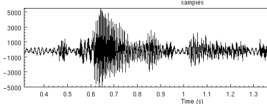
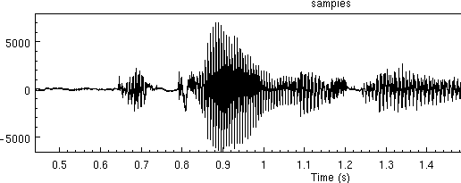
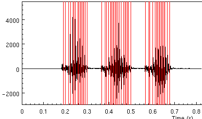
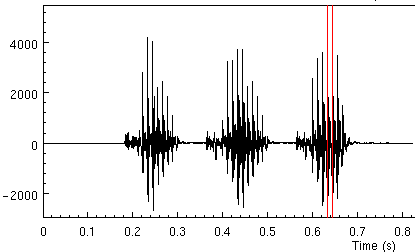
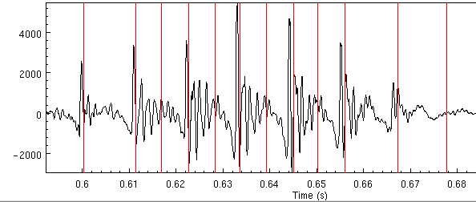
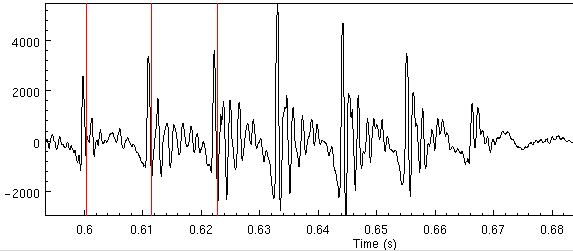
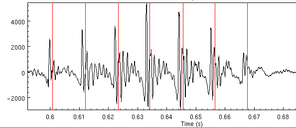

This chapter discusses a number of general issues that deserve comment but don't fit neatly into any part (or fit into many parts) of the document.
We have found that choosing the right speaker to record, is actually as important as all the the other processes we describe. Some people just have better voices that are better for synthesis than others. In general people with, clearer, more consistent voices are better than others but unfortunately its not as clear as that. Professional speakers are in general better for synthesis that non-professional. Though not all professional voices work, and many non-professional speakers give good results.
In general you are looking for clear speakers, who don't mumble and don't have any speech impediments. It helps if they are aware of speech technology, i.e. have some vague idea of what a phoneme is. A consistent deliver is important. As different parts of speech from different parts of the recorded database are going to be extracted and put together you what the speech to be as consistent as possible. This is usually the quality that professional speakers have (or any one used to public speaking). Also note most people can't actually talk for long periods without practice. Lectures/Teachers are actually much more used to this than students, though this ability can be learned quite easily.
Note choosing the right speaker, if its important to you, can be a big project. For example, an experiment done at AT&T to select good speakers for synthesis involved recording fair sized databases for a number of professional speakers (20 or so) and building simple synthesis example from their voice and submitting these to a large number of human listeners to get them to evaluate quality syrdal??. Of course most of us don't have the resources to do searches like that but it is worth taking a little time to think of the best speaker before investing the considerable time in takes in building a speaker.
Note that trying to capture a particular voice is still somewhat difficult. You will always capture some of that persons voice but its unlikely a synthesizer built from recordings of a person will always sound just like that person. However you should note that voice you think are distinctive may be so because of lots variation. For example Homer Simpson's voice is distinctive but it would be difficult to built a synthesizer from. The Comic Book Guy (also from the Simpsons) also has a very distinctive voice but is much less varied prosodically than Homer's and hence it iss likely to be easier to build a synthesizer from his voice. Likewise, Patrick Stewart's voice should be easier than Jim Carey's.
However as it is usually the case that you just have to take any speaker you have willing to do it (often yourself), there are still things you should do that will help the quality. It is best is recording is done in the same session, as it is difficult to set up the same recording environment (even when you are very careful). We recommend recording some time in the morning (not immediately you get up), and if you must re-record do so at the same time of day. Avoid recording when the speaker has a cold, or a hangover as it can be difficult to recreate that state if multiple sessions are required.
It is very important that your speaker and you understand the legal status of the recorded database. It is very wise that the speaker signs a statement before you start recording or at least talk to them ensuring they understand what you want to do with the data and what restrictions if any they require. Remember in recording their voice you are potentially allowing anyone (who gets access to the database) to fake that person's voice. The whole issue of building a synthetic voice from recordings is still actually an uninvestigated part of copyright but there are clear ways to ensure you wont be caught out by a law suit, or a disgruntled subject later.
Explain what you going to do with the database. Get the speaker to agree to the level use you may make of the recordings (and any use of them). This will roughly be:
You must find out what the speaker agrees to before you start spending your time recording. There is nothing worse than spending weeks on building a good voice only to discover that you don't have rights to do anything with it.
Also, don't lie to the speaker make it clear, what it means if their voice is to be released for free. If you release the voice on the net (as we do with our voices), anyone may use it. It could be used anywhere, from reading porn stories to emergency broadcast systems. Also note that effectively building a voice from a synthesizer means that the person will no longer be able to use voice id systems as a password protection (actually that depends on the type of voice id system). However also reassure them that these extremes are very unlikely and actually they will be contributing to world of speech science and people will use their voice because they like it.
We (KAL and AWB) have already given up the idea that our voices are in anyway ours and have recorded databases and made them public (even though AWB has a funny accent). When recording others we ensure the understand the consequences and get them to sign a license gives us (and/or our institution) the rights to do anything they wish, but the intention is the voice will be released for free without restriction. From our point of view, having no restrictions is by far the easiest. We also give (non-exclusive) commercial rights to the voice to the speaker themselves. This actually costs us nothing, and given most of our recorded voices are for free the speaker could re-release the free version and use it commercially (as can anyone else) but its nice that the original license allows the speaker direct commercial rights (none that I know of have actually done anything with those rights).
There may be other factors though. Someone else may be paying for the database so they need to be accommodated on any such license. Also a database may already be recorded under some license and you wish to use it to build a synthetic voice, make sure you have the rights to do this. Its amazing how mainly people record speech databases and don't take into account the fact that someone else may build a general TTS systems from their voice. Its better that you check that have to deal with problems later.
An example of the license we use at CMU is given in the festvox distribution `doc/speaker.licence'.
Also note that there are legal aspects to other parts of a synthetic voice the builder must also ensure they have rights to. Lexicons may have various restrictions. The Oxford Advanced Learners' Dictionary that we currently use for UK English voices is free for non-commercial use only, thus effectively imposing the same restriction on the complete voice even though the prosodic models and diphone databases are free. Also be careful you check the rights when building models from existing data. Some databases are free for research only and even data derived from them (e.g. duration models) may not be further distributed. Check at the start, question all pieces of the system to make sure you know who owns what and what restrictions they impose. This process is worth doing at the start of a project so things are always clear.
Although the best recording conditions can't probably be achieved recording directly to a computer (under Unix or some other operating systems). We accept that in many cases recording directly to a computer has many conveniences outweighing its disadvantages.
The disadvantages are primarily in quality, the electromagnetic noise generated by a machine is large and most computers have particularly poor shielding of there audio hardware such that noise always gets added to the recorded signal. But there are ways to try to minimize this. Getting better quality sound cards helps, but they can be very expensive. "Professional" sound cards can go for as much as a thousand dollars.
The advantage of using a computer directly is that you have much more control over the recording session and first line processing can down at record-time. In recent years we found the task of transferring the recorded data from DAT tapes to a computer, and splitting them into individual files, even before phonetic, labelled a significantly laborious task, often larger and resource intensive than the rest of the voice building process. So recently we've accept that direct recording to disk using a machine worthwhile, except for voices that require the highest quality (and when we have the money to take more time). This section describes the issues in recording under Unix, though they mostly apply under Windows too if you go that route.
The first thing you'll find out about recording on a computer is that no one knows how to do it, and probably no-one has actually used the microphone on the machine at all before (or even knows if there is a microphone). Although we believe we are living in a multi-media computer age, setting up audio is still a tricky thing and even when it works its often still flakey.
First you want to ensure that audio works on the machine at all. Find out if anyone has actually heard any audio coming from it. Even though there may be an audio board in there, it may not have any drivers installed or the kernel doesn't know about it. In general, audio rarely, "just works" under Linux in spite of people claiming Linux is ready for the desktop. But before you start claiming Windows is better, we've found that audio rarely "just works" there too. Under Windows when it works its often fine, but when it doesn't the general Windows user is much less likely to have any knowledge about how to fix it, while at least in the Linux world, users have more experience in getting recalcitrant devices to come to life.
Its difficult to name products here as the turn over in PC hardware is frantic. Generally newer audio cards wont work and older card do. For audio recording, we only require 16bit PCM, and none of the fancy, FM synthesizers and wavetable devices, those are irrelevant and often make card difficult or very hard to use. Laptops are particular good for recording, as they generally add less noise to the signal (especially if run on the battery) and they are portable enough to take into a quite place that doesn't have desktop cooling fan running in the background. However sound on Laptops under Unix (Linux, FreeBSD, Solaris etc) is unfortunately even less likely to work, due to leading edge technology and proprietary audio chips. Linux is improving in this area but although we are becoming relatively good at getting audio to work on new machines, its still quite a skill.
In general search the net for answers here. Linux offers both ALSA http://www.alsa-project.org/ and the Open Sound http://www.opensound.com/ drivers which go a long way to help. Note though even when these work there may be other problems (e.g. on one laptop you can have either sound working or suspend working but not both at once).
To test audio you'll need something to modify the basic gain on the audio drivers (e.g. `xmixer' under Linux/FreeBSD, or `gaintool' under Solaris). And you can test audio out with the command (assuming you've set `ESTDIR')
$ESTDIR/bin/na_play $ESTDIR/lib/example_data/kdt_001.wav
which should play a US male voice saying "She had your dark suit in greasy washwater all year."
To test audio in you can use the command
$ESTDIR/bin/na_record -o file.wav -time 3
where the time given is the number of seconds to record. Note you may need to change the microphone levels and/or input gain to make this work.
You should look at the audio signal as well as listen to it. Its often quite easy to see noise in a signal than hear it. The human ear has developed so that it can mask out noise, but unfortunately not developed enough to mask all noise in synthesis. But in synthesis when we are going to concatenated different parts of the signal the human ear isn't as forgiving.
The following is a recording made with background noise, (probably a computer).

The same piece of speech (re-iterated) in a quiet environment looks like

As you can see the quiet parts of the speech are much quieter in the clean case than the noise case.
Under Linux there is a Audio-Quality-HOWTO document that helps get audio up and running. AT time of writting it can be found http://audio.netpedia.net/aqht.html
Although never as good as extracting pitchmarks from an EGG signal, we have had a fair amount of success in extracting pitchmarks from the raw waveform. This area is somewhat a research area but in this section we'll give some general pointers about how to get pitchmarks form waveforms, or if not at least be able to tell if you are getting reasonable pitchmarks from waveforms or not.
The basic program which we use for the extraction is `pitchmark' which is part of the Speech Tools distribution. We include the script `bin/make_pm_wave' (which is copied by ldom and diphone setup process). The key line in the script is
$ESTDIR/bin/pitchmark tmp$$.wav -o pm/$fname.pm -otype est \ -min 0.005 -max 0.012 -fill -def 0.01 -wave_end \ -lx_lf 200 -lx_lo 51 -lx_hf 80 -lx_ho 51 -med_o 0
This program filters in incoming waveform (with a low and a high band filter, then uses autocorellation to find the pitch mark peaks with the min and max specified. Finally it fills in the unvoiced section with the default pitchmarks.
For debugging purposes you should remove the `-fill' option so you can see where it is finding pitchmarks. Next you should modify the min and max values to fit the range of your speaker. The defaults here (0.005 and 0.012) are for a male speaker in about the range 200 to 80 Hz. For a female you probably want values about 0.0033 and 0.7 (300Mhz to 140Hz).
Modify the script to your approximate needs, and run it on a single file, then run the script that translates the pitchmark file into a labelled file suitable for emulabel
bin/make_pm_wave wav/awb_0001.wav bin/make_pm_pmlab pm/awb_0001.pm
You can the display the pitchmark with
emulabel etc/emu_pm awb_0001
This should should a number of pitchmarks over the voiced
sections of speech. If there are none, or very few it definitely
means the parameters are wrong. For example the above parameters
on this file taataataa properly find pitchmarks in the three vowel
sections

It the high and low pass filter values -lx_lf 200 -lx_hf 80
are in appropriate for the speakers pitch range you may get either
too many, or two few pitch marks. For example if we change the
200 to 60, we find only two pitch marks in the third vowel.

If we zoom in our first example we get the following

The pitch marks should be aligned to the largest (above zero) peak in each pitch period. Here we can see there are too many pitchmarks (effectively twice as many). The pitchmarks at 0.617, 0.628, 0.639 and 0.650 are extraneous. This means our pitch range is too wide. If we rerun changing the min size, and the low frequency filter
$ESTDIR/bin/pitchmark tmp$$.wav -o pm/$fname.pm -otype est \ -min 0.007 -max 0.012 -fill -def 0.01 -wave_end \ -lx_lf 150 -lx_lo 51 -lx_hf 80 -lx_ho 51 -med_o 0
We get the following

Which is better but its now missing pitchmarks towards the end of
the vowel, at 0.634, 0.644 and 0.656. Giving more range
for the min (0.005) gives slight better results, but still we
get bad pitchmarks. The double pitch mark problem can be lessened by
not only changing the range but also the amount order of the high
and low pass filters (effectively allowing more smoothing). Thus
when secondary pitchmarks appear increasing the -lx_lo parameter
often helps
$ESTDIR/bin/pitchmark tmp$$.wav -o pm/$fname.pm -otype est \ -min 0.005 -max 0.012 -fill -def 0.01 -wave_end \ -lx_lf 150 -lx_lo 91 -lx_hf 80 -lx_ho 51 -med_o 0
We get the following

This is satisfactory this file and probably for the whole databases of that speaker. Though it is worth checking a few other files to get he best results. Note the by increasing the order of the filer the pitchmark creep forward (which is bad).
If you feel brave (or are desperate) you can actually edit the pitchmarks yourself with emulabel. We have done this occasionally especially when we find persistent synthesis errors (spikes etc). You can convert a pm_lab file back into its pitchmark format with
bin/make_pm_pmlab pm_lab/*.lab
An post-processing step is provided that moves the predicted pitchmarks to the nearest waveform peak. We find this useful for both EGG extracted pitchmarks and waveform extracted ones. A simple script is provided for this
bin/make_pm_fix pm/*.pm
If you pitchmarks are aligning to the largest troughs rather than peaks
your signal is upside down (or you are erroneously using -inv.
If you are using -inv, don't, if you are not, then invert
the signal itself with
for i in wav/*.wav do ch_wave -scale -1.0 $i -o $i done
Note the above are quick heuristic hacks we have used when trying to get pitchmarks out of wave signals. These require more work to offer a more reliable solution, which we know exists. Extracting (fixed frame) LPC coefficients and extracting a residual, then extracting pitchmarks could give a more reliable solution but although all these tools are available we have not experimented with that yet.
Go to the first, previous, next, last section, table of contents.